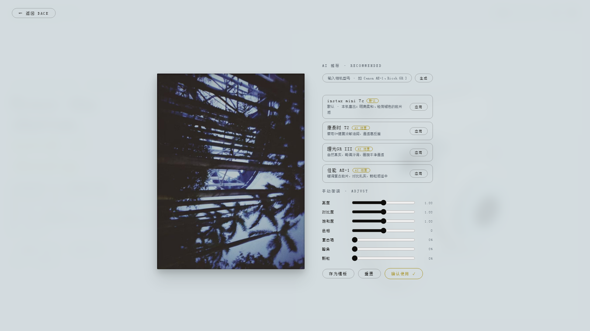

instax 拍立得 · AI 滤镜 + 反即时满足
以富士 instax mini 7c 为原型的互动网页，把等待做成体验，把 AI 做成能看懂、能微调的调色工具。


背景
滤镜 App 都在比谁更即时、更好改，拍立得那种只有一张、要等显影的劲儿没了；AI 滤镜又普遍是黑盒，用户不知道参数怎么来的。做了个网页把这两件事都找回来。
关键决策
- 显影 90 秒不能跳过，摇鼠标最多加速三倍。等待本身是拍立得的情绪，不是 bug。
- AI 没做帮你美颜，做拿相机型号换一套滤镜参数。DeepSeek 联网查这台机子的真实发色，吐出 7 个能看懂的参数。
- 模型输出先过 JSON 和范围校验，滑杆区间之外的值进不来，界面不会被 AI 弄崩。
- 没 key 也能玩，内置三张预生成的滤镜卡，加一张默认 instax 滤镜。
- 调色在装片前烘成新底图，下游显影、收藏、画廊零改动。
技术
纯前端零后端，Three.js + Canvas 2D + localStorage，DeepSeek 联网搜索，单文件构建双击即开。
复盘
Safari 不支持 Canvas 的 ctx.filter，调色烘焙降级成手写颜色矩阵，逐像素算。如果重来先埋点，把体验好换成能算的数字。
← 返回总览